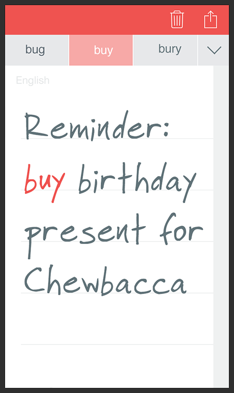
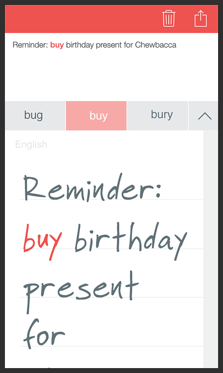

The below use cases are only examples of applications where MLTW has been used, sometimes with additional features. Note that all available features for the MLTW are listed in the API reference.
Here is an integration example of the Multi Line Text Widget in a note-taking application. In this scenario, the user can handwrite 1-page notes with his or her smartphone. Notes are recognized but stay handwritten and can only be edited as such. A typeset version is displayed in the overview.
